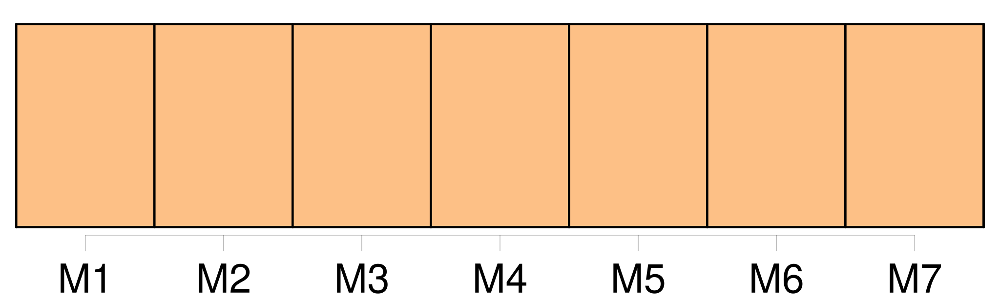

Longueur nb maillons : 16 mentions |
  |
Sans doute, les troubles qui me vinrent de cette période extraordinaire furent d'une sorte qu' [on] n'éprouve jamais à cet âge ; mais comme il n'existe rien d'assez fort pour nous vieillir malgré les apparences, c'est en enfant que je devais me conduire dans une aventure où déjà un homme eût éprouvé de l'embarras. [66 phrases] Point ce que l' [on] nomme de mauvais livres, mais plutôt les meilleurs, sinon pour l'esprit, du moins pour le mérite. [86 phrases] La folle disait des choses que j'ai oubliées, avec cette profonde mélancolie résignée que donne aux voix la certitude qu' [on] a raison, que tout le monde se trompe. [19 phrases]
Il peut regarder n'importe quoi, sauf un lapin qu' [on] écorche. [55 phrases] Un de nos buts favoris était Ormesson, et de suivre le Morbras, rivière large d'un mètre, traversant des prairies où poussent des fleurs qu' [on] ne rencontre nulle part ailleurs, et dont j'ai oublié le nom. [230 phrases] À force de vivre dans les mêmes idées, de ne voir qu'une chose, si [on] la veut avec ardeur, [on] ne remarque plus le crime de [ses] désirs. [30 phrases] Dans l'extrême jeunesse, l' [on] est trop enclin, comme les femmes, à croire que les larmes dédommagent de tout. [15 phrases] Lorsque quelque chose, venu de l'extérieur, m'obligeait à penser moins paresseusement à Marthe, j'y pensais sans amour, avec la mélancolie que l' [on] éprouve pour ce qui aurait pu être. [2 phrases] [On] ne peut à la fois choisir le lit et coucher dedans. [65 phrases] Je me sentais tellement près de Marthe, avec la certitude que nous pensions en même temps aux mêmes choses, que lui parler m'eût semblé absurde, comme de parler haut quand [on] est seul. [8 phrases] Je profitais de son faux sommeil pour respirer ses cheveux, son cou, ses joues brûlantes, et en les effleurant à peine pour qu'elle ne se réveillât point ; toutes caresses qui ne sont pas, comme [on] croit, la menue monnaie de l'amour, mais, au contraire, la plus rare, et auxquelles seule la passion puisse recourir. [46 phrases] La saveur du premier baiser m'avait déçu comme un fruit que l' [on] goûte pour la première fois. [48 phrases] Je ne sais quelle timidité, si ce n'est celle que l' [on] éprouve en face de ce qu' [on] n'a jamais fait, me retenait. |

|
La ressource peut être téléchargée sur la page Ortolang
Si vous avez des questions ou vous voyez des erreurs, merci d'envoyer un mail à silvia.federzoni89@gmail.com
Site développé par S. Federzoni (contact)